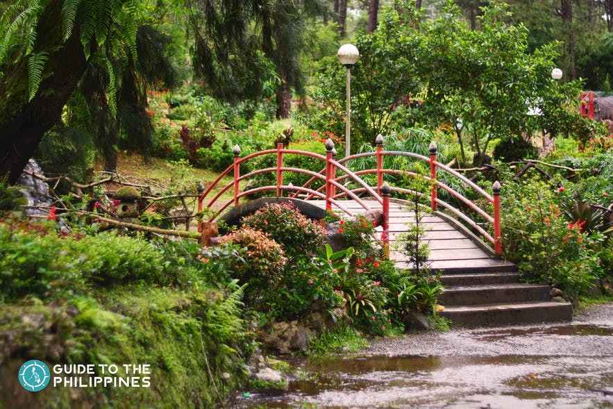
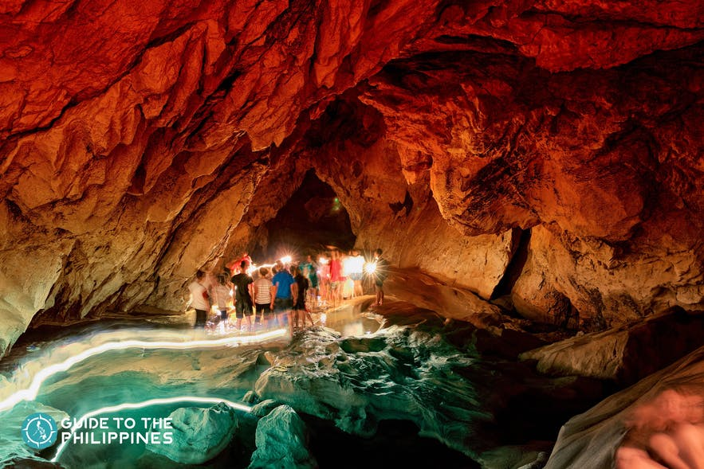

Pick somewhere different to go for your next adventure – like, really different. These eight days in gorgeous, northern Philippines will stay with you forever. Trek through remote villages to see stunningly green rice terraces, learn about unusual and historic traditions like the hanging coffins of Sagada, and then wrap it all up by meandering down the streets of Manila, which may honestly be some of the most underrated fun this side of Southeast Asia. We swear.
Luzon Tour
Slideshow Gallery
Northern Philippines on a Shoestring
|
8 days Start and end in Manila | |
| Tour Operator: G Adventures | Max group size: 18 |
| Age range: 18 to 39 | Operated in: English |
| Tour id: 00001 | Hygiene Measure: Included |
| Private available: Available per request with additional payment | |
Highlights
|
Ready-to-book adventures, personalized
| Personal Make your adventure more you | Private Enjoy a tour focused solely on your travel group |
| Professional Access our Travel Experts' insider knowledge | Protected Travel within your own bubble |
Itinerary
Start and end in Manila! With the In-depth Cultural tour Northern Philippines on a Shoestring, you have a 8 days tour package taking you through Manila, Philippines and 3 other destinations in Philippines. Northern Philippines on a Shoestring includes accommodationin a hoteland hostel as well as an expert guide, meals, transport and more.
Manila
The city of Manila is a place that is both old and modern. With its rich history, almost all areas have become great tourist spots in Manila that everyone wants to visit. From the preserved architecture brought by Spanish colonialism to outstanding Filipino culture, Manila has everything you'd ask for!
Things to do:
-
Rizal Park

One of your first stops in Manila should be Rizal Park. Sometimes referred to as Luneta Park, this is a peaceful and manicured outdoor garden located in the heart of the city. Throughout the park. you will see statues and monuments paying tribute to Manila's history.
-
Intramuros
You will likely pass through the Intramuros whether you know it or not as you explore Manila. It is the oldest section of the city and characterized by its walled fortress. This section of Manila was once a walled city during Spanish Colonial times in the 1500s to the 1800s.
-
San Agustin Church and Museum
As a designated UNESCO World Heritage site, the San Agustin Church is a national treasure in the Philippines. The Catholic Church has a unique history that is reflected in the details of the building. If you look closely, you will see both Chinese and Spanish influences in the design. The church has been rebuilt several times after battles and natural disasters.
-
Fort Santiago
The site of Fort Santiago is an impressive stop if you are visiting the city and it is one of the most important historical sites in Manila. The 16th-century fortress was key in protecting the Intramuros, which is the oldest district in Manila, known historically as the Walled City.
-
Manila Ocean Park
The Manila Ocean Park is one of the most unique adventures in the city and one of the top things to do for families visiting the city. Get interactive with marine life with the Sharks and Rays Encounter, Trails to Antarctica, or the fish spa where fish clean your feet in a small pool of water. The park easily fills several hours depending on how many encounters you try. In addition to the state-of-the-art aquatic facility, you will see exhibits of birds and other animals.
Baguio
Aside from the scenery and chilly weather, though, you'd want to stick around to witness a wide variety of cultural and historical attractions. You'll never run out of things to do in Baguio, and it's no wonder many visitors prefer to book with extended stay hotels when visiting this city. Here's a list of all the activities you can do and what to see in Baguio to help you plan your Baguio tour:
Things to do:
-
Head to Mines View Park

Baguio was a former mining town in the early 20th century. To get a glimpse of that past, you have to visit Mines View Park. This park sits on a ridge on the northeast side of Baguio. Exploring the park is one of the recommended leisure activities in Baguio.
-
Strawberry Farm
Visiting the strawberry farm in nearby La Trinidad along with other attractions is one of the top experiences you can't miss out on when you're in the Summer Capital.
-
Baguio Night Market
If you're unsure of what to do in Baguio at night, drop by the Baguio Night Market. Baguio is a famous bargain shopping hotspot. If you want to put your haggling skills to the test, there is no better place than the Baguio Night Market. This bargain-hunting haven is every thrifty fashionista's dream.
-
Unwind at the Baguio Botanical Garden

The Baguio Botanical Garden is one of the most beautiful places in Baguio and provides a much-needed tranquil space amid bustling Baguio City. In 2009, the garden was renamed Centennial Park in celebration of Baguio's 100th year as the Summer Capital of the Philippines.
-
Head to the Easter Weaving Room
To complete your Baguio city culture and countryside tour, stop by the Easter Weaving Room. Established in 1909, Easter Weaving Room is as old as Baguio itself. It is also one of the few places in Baguio where you can witness authentic traditional weaving techniques practiced by the natives of the Cordillera Region. It’s a great addition to a day trip in Baguio. Easter Weaving Room has a work area where you can watch weavers do their magic on the looms with multi-colored threads.
Sagada
Tucked in the Cordillera Mountains and almost always shrouded in mist and fog, Sagada in Mountain Province is a tiny, peaceful town famous for retaining much of its indigenous culture. Located about 5,000 feet above sea level, Sagada is famous for its cooler climate compared to most parts of the Philippines.
The average yearly temperatures in the town range from around 17 to 20 degrees Celsius. As part of the Northern Philippines such as Baguio and Banaue, some attractions in Sagada can be reached through hiking. You can go up a mountain, make your way down to waterfalls, or try to keep your balance on rice paddies and go rappelling inside caves.
Things to do:
-
Visit the Hanging Coffins
High up on limestone cliffs are the Sugong Hanging Coffins. This burial practice is an ancient tradition still practiced by some of the people of Sagada. Suspending their deceased loved ones’ coffins up on mountain cliffs are said to bring their souls closer to heaven. The hanging coffins in Sagada can be seen on the road leading to the Sumaguing Cave entrance.
-
Go Spelunking at Sumaguing Cave

If you’re looking for an exciting adventure that will test your limits, Sumaguing Cave has got you covered. It has the largest chamber built over the years, with natural rock formations spread within. You will be getting wet and muddy, so make sure you wear comfortable clothing. At certain points of the trek, you will need to go barefoot so you can get a better grip of the rock.
-
Go Above the Clouds at Mt. Kiltepan Viewpoint
At 1,636m, Mt. Kiltepan is one of the highest peaks in Sagada, and a great vantage point to watch the sunrise. Seeing the sun peek out from behind the Cordillera mountains and low-lying clouds is a surreal experience. To get to the mountain, you can book a round trip transport from the town proper.
-
Take a Dip at Bomod-ok Falls
Also known as the “Big Falls,” the Bomod-ok Falls in Barangay Banga-an is as beautiful as it is impressive, and the hour-long trek to the falls is worth the workout. Before reaching the falls, you will be passing through picturesque rice terraces and down a valley. To get to the falls, you can hire a van to go to Banga-an Information Center to register and hire a guide to take you to Bomod-ok.
-
Walk the Fields at Kapay-aw Rice Terraces
The Kapay-aw Rice Terraces is the nearest rice terraces from the Sagada town proper; it can also be seen from the road leading to the Sumaguing cave entrance. You can also take a tour of the rice terraces, while not as big as the ones in Banaue, are just as beautiful and impressive.